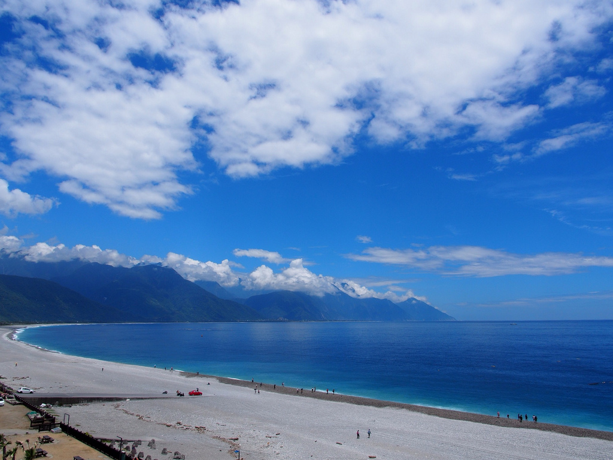

湛藍太平洋的華麗弧線，傾聽礫石與浪花交織的交響樂章

七星潭又稱月牙灣，位於花蓮縣新城鄉東北角、大漢技術學院旁，是花蓮縣唯一劃定的縣級風景區。這裡雖然被稱為「潭」，但實際上是一個由斷層形成、面向蔚藍太平洋的完美弧形海灣。不同於西海岸的細沙，七星潭遍佈著經過千萬年海浪瘋狂淘洗的圓潤「礫石」與鵝卵石。坐在岸邊，看著泛著Tiffany藍的漸層海浪拍打在岸上，聽著海水退去時礫石相互滾動摩擦發出的巨大嘩啦聲，是來花蓮放空身心最極致的視覺與聽覺享受。
站在海灘上向北遠眺，可以看到清水斷崖宏偉地插入太平洋；向南看則是綿延的海岸線。來到七星潭的旅客，流行在礫石灘上挑選扁平的石頭「疊疊樂」。傳說只要能將石頭堆疊到 7 層以上而不倒塌，許下的願望就會在太平洋的見證下實現。
位於海灘南側的「四八高地」，是戰時留下來的軍事制高點高台。站在這裡，可以以完美的 180 度上帝視角俯瞰整片月牙灣與蔚藍深邃的太平洋。高地下方還保留了神祕的戰備坑道，充滿了歷史探險的趣味。
由於東海岸毫無光害且面朝東方，七星潭是北台灣觀賞「太平洋日出」的終極聖地。此外，因緊鄰花蓮空軍基地，白天造訪時，經常能近距離看到帥氣的 F-16 戰鬥機以震撼耳膜的轟鳴聲在海灣上空拔山倒樹飛過，是軍事迷不可錯過的奇景。